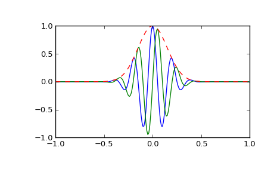

scipy.signal.gausspulse¶
- scipy.signal.gausspulse(t, fc=1000, bw=0.5, bwr=-6, tpr=-60, retquad=False, retenv=False)[source]¶
Return a Gaussian modulated sinusoid:
exp(-a t^2) exp(1j*2*pi*fc*t).If retquad is True, then return the real and imaginary parts (in-phase and quadrature). If retenv is True, then return the envelope (unmodulated signal). Otherwise, return the real part of the modulated sinusoid.
Parameters : t : ndarray or the string ‘cutoff’
Input array.
fc : int, optional
Center frequency (e.g. Hz). Default is 1000.
bw : float, optional
Fractional bandwidth in frequency domain of pulse (e.g. Hz). Default is 0.5.
bwr : float, optional
Reference level at which fractional bandwidth is calculated (dB). Default is -6.
tpr : float, optional
If t is ‘cutoff’, then the function returns the cutoff time for when the pulse amplitude falls below tpr (in dB). Default is -60.
retquad : bool, optional
If True, return the quadrature (imaginary) as well as the real part of the signal. Default is False.
retenv : bool, optional
If True, return the envelope of the signal. Default is False.
Returns : yI : ndarray
Real part of signal. Always returned.
yQ : ndarray
Imaginary part of signal. Only returned if retquad is True.
yenv : ndarray
Envelope of signal. Only returned if retenv is True.
See also
Examples
Plot real component, imaginary component, and envelope for a 5 Hz pulse, sampled at 100 Hz for 2 seconds:
>>> from scipy import signal >>> import matplotlib.pyplot as plt >>> t = np.linspace(-1, 1, 2 * 100, endpoint=False) >>> i, q, e = signal.gausspulse(t, fc=5, retquad=True, retenv=True) >>> plt.plot(t, i, t, q, t, e, '--')
